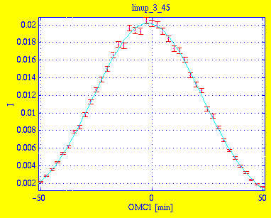

Line-up of M-S collimator
Measurements
Mount 30' collimator C1 between monochromator and sample, otherwise as previous setup. Let OMC1 denote the angle of rotation
of C1 around the Y (vertical) axis. C1 is manually aligned by scanning OMC1,
choosing the angle of maximum intensity.
Simulations
Results of scanning OMC1 in linup_3_45.sim:
Instrument definition linup-2.instr.

Amplitude 2.0907e-02 1.4015e-04
Centre -1.8172e+00 8.2628e-02
Width 2.4282e+01 2.5418e-01
Background -7.2868e-04 1.5196e-04
* Chi Squared 1.3509
The peak is at -1.8', caused by the asymetry in the beam channel. We use
OMC1=-1.8' in the following simulations.
Kristian Nielsen
<kristian.nielsen@risoe.dk> /
Jul 17, 1998.